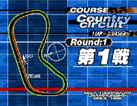
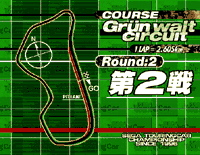
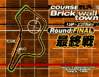
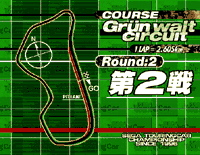
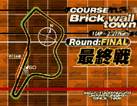

[TEXT] [ShockWave]
|  |  |
| [TEXT] [ShockWave] | [TEXT] [ShockWave] |
|  |  |
| [TEXT] [ShockWave] | [TEXT] [ShockWave] |
Differnce of performance between car modelThe performance of driving varies amoung car model, so you have to change your mind when using 4WDcar and FRcar.
4WD car has a stable steering, and has high coordinating point at the corner, so it is easy to use for beginners.
FR car transmit all of the power to the road surface from the rear tire, so sudden steering will cause power slide, and if you don't make a counter steer, you will lose the control. You will need delicate seering and balance control, but it is more powerfull than 4WD car, so the expert who want to drive aggressively may want to chose this type.
The driving force type of the four cars are these:
4WD : AlphaRomeo/Opel
FR : Mercedes/Toyota
By the way, we adjusted so that there is no advantage/disadvantage on time between the driving force type. Instead, we want everyone to actually play and give a conclusion to the discussion "Which is faster".
The basic ways to runIn the actual touring car race, if you slide the tire, the engine will rev down, and will lead to the timeloss. Therefore, driver has to bear in mind not to slide the tire by appropriate breaking and shift change.
This game also reproduce the sense of grip driving, and we want you to enjoy the driving in the limit of the machine.
To change your mind from the old racing games using drift driving, we want to explain few points.
Slow in - Fast out
If you try to control the speed after you came to the limit of cornering, the action will be instable, and the acceleration will be slow. So in the acute curve,you should slow down before you enter the curve, go into the inside, then step on the gas. It's OK if you catch the feeling to accelerate when you get out of the curve.
Weight balance
The driving ability of cars in this game are based on numbers of parameter. Therefore, the curving condition will change evey minute according to the weight balance of front and back. If you step off the gas or step on the brake and increase the weight on the front, the grip on front tire will increase and the steering will be sharper. On the other hand , if you step on gas suddenly, the grip of front tire will decrease, becomes understeer, and will be likely to get out of the course. This also shows the importance of slow in-fast out.
Out-In-Out
As explained above, if you take an overbearing course, not only that engine rev will decrease , but tail slide may occur. In this game also, it is important to keep the grip and try not to decrease the rev of the engine by taking a lenient course. These delicate caputurebility is probably very rare in the games now days.
Avoid sudden steering
Since the field of vision in the display is small in the game, so usually, you have more speed than you think. Therefore, sudden steering will cause tail slides. When you go into the corner, you should deciede how much you will steer the handle beforehand, and after that, you should make the little sdjustment by accel work.
The way of driving for differnt driving force
To drive a 4WD car, you just need to know the points above, but you need a little more for the FR car. Basicly it is faster not to drift, but FR has a power to compensate the decrease of engine rev, so there are times that it will be faster to drift a little. However, you have to becareful so you don't keep on steering until the tail slides. It is just good to drift smoothly, but it will still be slow to slide the tail. Also, when driving FR car, it may be better to steer the handle a little bit faster than 4WD car. Anyway, if you respond quikly from the reaction from the road, you will probably be able to maintain the control.

|

|